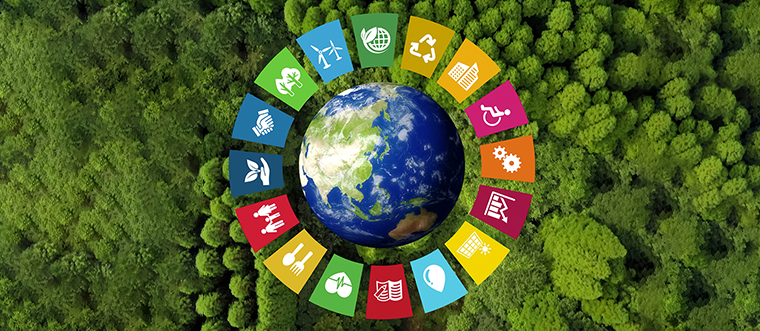

Os 17 Objetivos e 169 metas da Agenda ONU
O que são as ODS?
ODS é a sigla para os Objetivos de Desenvolvimento Sustentável que fazem parte da chamada “Agenda 2030”. Trata-se de um pacto global assinado durante a Cúpula das Nações Unidas em 2015, pelos 193 países membros.
A agenda é composta por 17 objetivos ambiciosos e interconectados, desdobrados em 169 metas, com foco em superar os principais desafios de desenvolvimento enfrentados por pessoas no Brasil e no mundo, promovendo o crescimento sustentável global até 2030.
Quais são os ODS?
Os 17 Objetivos de Desenvolvimento Sustentável abrangem diferentes temas, relacionados a aspectos ambientais e sociais. Assim como as metas de cada ODS, eles foram construídos de maneira interdependente. Ou seja, quando um país conseguir atingir um deles, muito provavelmente terá conseguido avançar em outros.
Bater todas as metas do ODS 11, por exemplo, e chegar a uma cidade sustentável, significa que o município também atingiu o ODS 6 (litros de água limpa e saneamento), o ODS 8 (crescimento econômico) e o ODS 15 (proteção da vida na terra). Sendo assim, as metas podem ser divididas em temas que visam incluir dimensões sociais, ambientais e econômicas. A seguir, conheça cada um deles.
- Erradicação da pobreza: acabar com a pobreza em todas as suas formas, em todos os lugares;
- Fome zero e agricultura sustentável: acabar com a fome, alcançar a segurança alimentar e melhoria da nutrição e promover a agricultura sustentável;
- Saúde e bem-estar: assegurar uma vida saudável e promover o bem-estar para todos, em todas as idades;
- Educação de qualidade: assegurar a educação inclusiva, equitativa e de qualidade, e promover oportunidades de aprendizagem ao longo da vida para todos;
- Igualdade de gênero: alcançar a igualdade de gênero e empoderar todas as mulheres e meninas;
- Água potável e saneamento: garantir disponibilidade e manejo sustentável da água e saneamento para todos;
- Energia limpa e acessível: garantir acesso à energia barata, confiável, sustentável e renovável para todos;
- Trabalho decente e crescimento econômico: promover o crescimento econômico sustentado, inclusivo e sustentável, emprego pleno e produtivo, e trabalho decente para todos;
- Indústria, inovação e infraestrutura: construir infraestrutura resiliente, promover a industrialização inclusiva e sustentável, e fomentar a inovação;
- Redução das desigualdades: reduzir as desigualdades dentro dos países e entre eles;
- Cidades e comunidades sustentáveis: tornar as cidades e os assentamentos humanos inclusivos, seguros, resilientes e sustentáveis;
- Consumo e produção responsáveis: assegurar padrões de produção e de consumo sustentáveis;
- Ação contra a mudança global do clima: tomar medidas urgentes para combater a mudança climática e seus impactos;
- Vida na água: conservação e uso sustentável dos oceanos, dos mares e dos recursos marinhos para o desenvolvimento sustentável;
- Vida terrestre: proteger, recuperar e promover o uso sustentável dos ecossistemas terrestres, gerir de forma sustentável as florestas, combater a desertificação, deter e reverter a degradação da Terra e deter a perda da biodiversidade;
- Paz, justiça e instituições eficazes: promover sociedades pacíficas e inclusivas para o desenvolvimento sustentável, proporcionar o acesso à justiça para todos e construir instituições eficazes, responsáveis e inclusivas em todos os níveis;
- Parcerias e meios de implementação: fortalecer os meios de implementação e revitalizar a parceria global para o desenvolvimento sustentável.